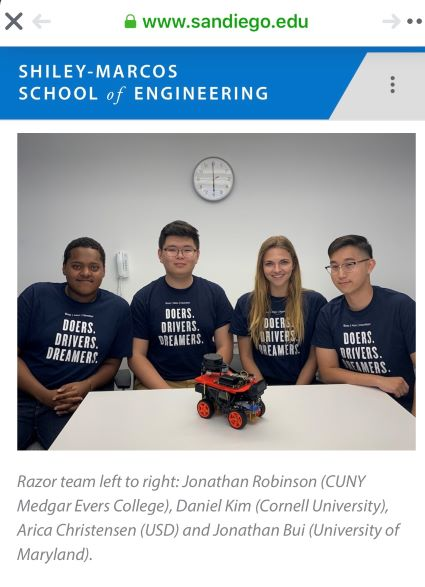

Jonathan Bui
I am a Senior at the University of Maryland majoring in Information Science

College Park looking for oppurtunities to advance my
technical skills in software engineering and data science.
Booz Allen Hamilton Summer Games Intern
June 2019 - August 2019
Description
After 10 weeks, teams participate in a 3-day Challenge Cup that
consists of conferences and intern presentations.
The presentations are judged and the top 10 are chosen to more
forward, where a winning team is determined.
Responsibilities
- Built and presented RAZOR, a project focused on perceptive
navigation and target acquisition
using edge computing on an unmanned ground vehicle.
- Utilized artificial intelligence and machine learning with Computer
Vision for object detection to promote autonomous navigation and
object detection.
- Engineered Python scripts to interact with sensor-level data
collection, transformation, and visualization in order to provide
a generated map to the operator.
- Placed in the top ten out of 81 teams where RAZOR was presented
to C-Suite executives at the Summer Games Challenge Cup Finale.
Washington Surburban Sanitary Commission Intern
June 2017 - August 2017
Description
The Washington Suburban Sanitary Commission’s (WSSC) Student
Intern Program provides college/university students with the
opportunity to gain practical experience in their field of study.
Responsibilities
- Application developer for augmented reality and artificial
intelligence in an agile environment.
- Primary developer for backend system of the augmented reality
application.
- Developed PL/SQL scripts to analyze and produce reports on data.
Teaching Assistant University of Maryland, College Park
Fall 2018 - Spring 2019
Description
Responsible for performing teaching or teaching-related duties to
assist faculty members, professors, department heads and other faculty.
Responsibilities
- Application dEducated students on topics outlined in the
syllabus: variables, data types, assignments, arrays,
conditionals, loops, functions, and I/O operations.
- Proctored labs and examinations. eveloper for augmented
reality and artificial intelligence in an agile environment.
- Instructed students on how to build, populate, and query a
working database.